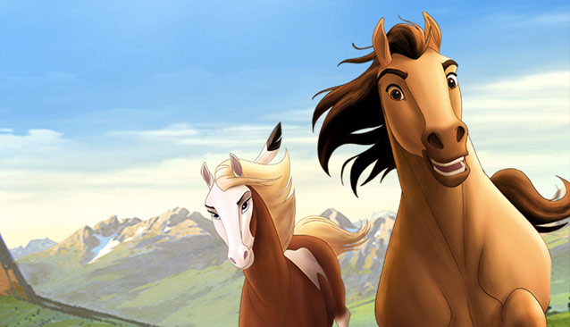
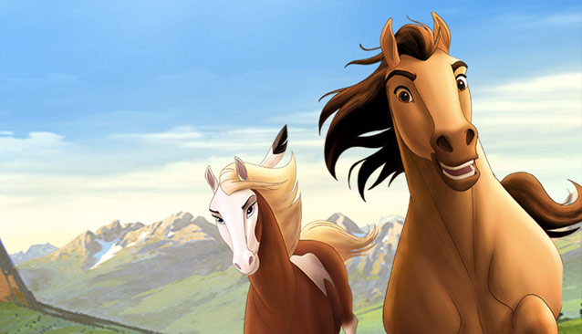

About Spirit
Spirit: Stallion Of The Cimarron is an animated movie made in 2002. Spirit is a stubborn stallion. He's a free spirit who refuses to be tamed
Spirit and Rain
Spirit’s Characteristics
- Fast
- Great jumper
- Hard-headed
Spirit: Stallion Of The Cimarron is an animated movie made in 2002. Spirit is a stubborn stallion. He's a free spirit who refuses to be tamed
Spirit and Rain